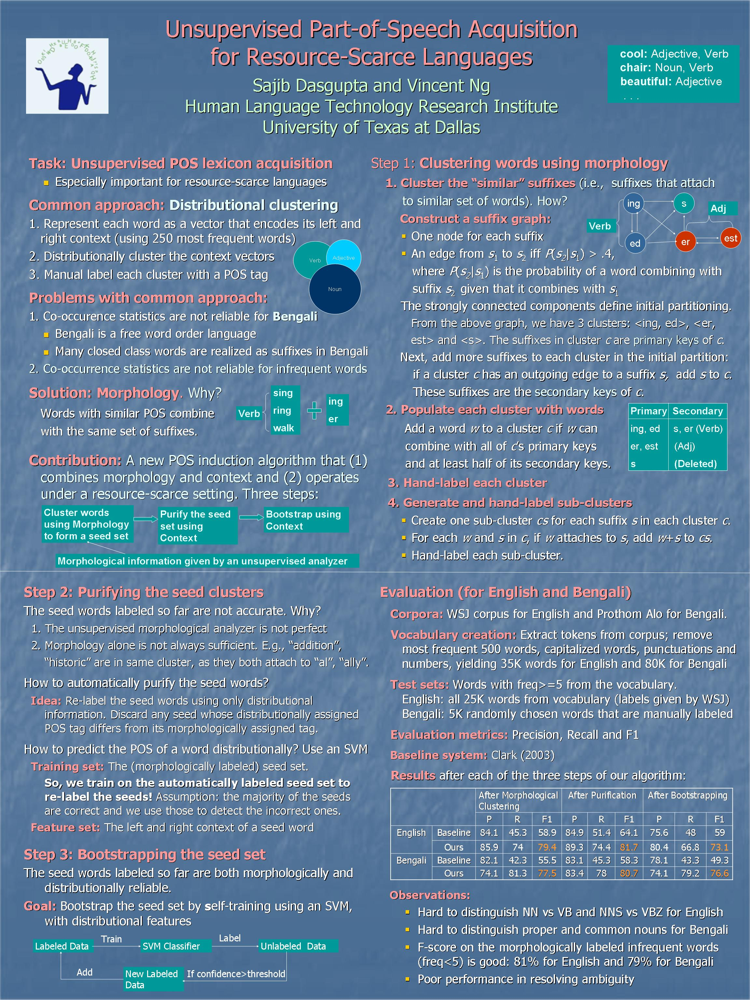

Unsupervised Part-of-Speech Acquisition for Resource-Scarce Languages
Sajib Dasgupta and Vincent Ng.
Proceedings of the Joint Conference on Empirical Methods in Natural Language Processing and Computational Natural Language Learning, pp. 218-227, 2007.
Click here for the
PostScript or PDF
version.
Abstract
This paper proposes a new bootstrapping approach to unsupervised
part-of-speech induction. In contrast to previous bootstrapping algorithms
developed for this problem, our approach aims to improve the quality of the
seed clusters by employing seed words that are both distributionally and
morphologically reliable. In particular, we present a novel method for
combining morphological and distributional information for seed selection.
Experimental results demonstrate that our approach works well for English and
Bengali, thus providing suggestive evidence that it is applicable to both
morphologically impoverished languages and highly inflectional languages.
Dataset
The Bengali dataset used in this paper is available from
here.
BibTeX entry
@InProceedings{Dasgupta+Ng:07b,
author = {Sajib Dasgupta and Vincent Ng},
title = {Unsupervised Part-of-Speech Acquisition for Resource-Scarce Languages},
booktitle = {Proceedings of the 2007 Joint Conference on Empirical Methods in Natural Language Processing and Computational Natural Language Learning},
pages = {218--227},
year = 2007
}
